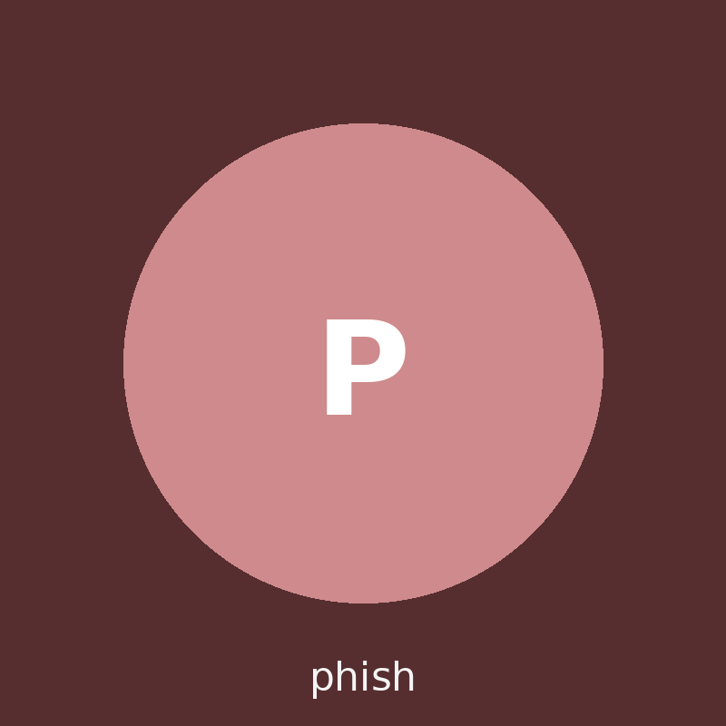

📁 Mapa - Sectores del INSTITUTO
FRAGMENTOS RECUPERADOS
- No hay pistas registradas aún.
1. Dirección
Concepto: Tríada C-I-D (explicada)
Pendiente
2. Sala de Informática
Concepto: Equipos compartidos
Pendiente
3. Identidad Digital
Concepto: Contraseñas + Doble verificación (MFA)
Pendiente
4. Correo del INSTITUTO
Concepto: Phishing (engaño por mail)
Pendiente
5. Dispositivos Personales
Concepto: IoT (Internet de las Cosas)
Pendiente
6. Caso final
Concepto: Enlaces acortados + documentos compartidos
Pendiente
TERMINAL
Protocolo de Finalización
Bloqueado
1. Dirección: proteger la información (Tríada C‑I‑D)
Informe de la Dra. Vega
Concepto de la misión: Tríada C‑I‑D
Confidencialidad: que solo vea la info quien corresponde. Integridad: que la info no se cambie sin permiso. Disponibilidad: que el sistema funcione cuando lo necesitás.
¿Por qué te conviene conocer C‑I‑D? Porque te da un mapa rápido para entender incidentes del INSTITUTO: si el problema es “alguien vio algo que no debía” (C), “alguien cambió algo” (I) o “no puedo acceder cuando lo necesito” (D). Con ese mapa, elegís mejores acciones: permisos correctos al compartir, prioridades al responder y pruebas para investigar.
En Dirección detectaron accesos raros al registro de estudiantes y calificaciones. Antes de culpar a alguien, necesitamos entender qué se dañó: ¿se filtró información?, ¿se modificó?, ¿o el sistema se cayó?
Chequeo rápido (opción múltiple)
Estas preguntas te ayudan a conectar el concepto con situaciones reales del INSTITUTO. Al aprobar, se te revela la clave.
1) Si alguien cambia una nota o una fecha en un documento sin permiso, ¿qué pilar se compromete más?
2) ¿Por qué el historial de versiones (o registros) es importante para la integridad?
3) ¿Qué configuración de permisos suele ser más segura para una planificación del INSTITUTO?
Narrativa de misión: “La planilla no coincide”
Dirección recibió reclamos: “mi nota cambió”, “la fecha del parcial se movió” y “alguien vio devoluciones privadas”. Tu trabajo: clasificar qué se rompió (C, I o D) para saber qué investigar y qué priorizar.
ASIGNACIÓN C‑I‑D (en cosas del INSTITUTO)
Selecciona el principio de la tríada (Confidencialidad, Integridad, Disponibilidad) que se compromete más en cada caso:
2. Sala de Informática: equipos compartidos
Informe de Kai Byte
Concepto de la misión: equipos compartidos
En el INSTITUTO hay máquinas de préstamo y PCs del laboratorio. En estos casos, el riesgo no es “hacking de película”: suele ser dejar una sesión abierta (quedás logueado) o guardar contraseñas en el navegador. Eso permite que otra persona entre a tu CREA o Gmail sin saber tu clave.
En el laboratorio aparecieron cuentas abiertas y cambios raros en trabajos. No necesitamos acusar por “cara”: necesitamos mirar conductas. Vas a analizar 3 situaciones reales y decidir cuáles son prácticas seguras y cuáles ponen en riesgo al INSTITUTO.
Chequeo rápido (opción múltiple)
Lo que parece “detalle” en un equipo compartido puede ser la puerta de entrada. Respondé y ganá puntos extra.
1) Terminás de usar una PC de préstamo. ¿Qué secuencia es la más segura?
2) Encontrás contraseñas guardadas en el navegador de una PC del INSTITUTO. ¿Qué hacés?
3) ¿Cuál es el riesgo más directo de dejar Gmail/CREA abierto en una PC compartida?
Narrativa de misión: “Sesiones fantasma”
A las 8:00, una PC de préstamo arranca con Gmail y CREA abiertos. No es “magia”: es una costumbre peligrosa. Clasificá las prácticas y después elegí el perfil que más se repite (no por “culpa”, sino por hábitos).
PRÁCTICAS EN RIESGO (LO QUE SÍ PASA EN UN INSTITUTO)
Clasificá cada caso según el nivel de riesgo: Bajo (bien), Medio (dudoso) o Alto (peligroso). Cada error resta puntos. Cuando termines, vas a elegir un sospechoso (no por “malo”, sino por sus hábitos).
Elige a tu Sospechoso Principal
Clasifica a los tres agentes arriba para habilitar la selección.
3. Identidad Digital: contraseñas + doble verificación
Informe de la Dra. Cipher
Concepto de la misión: contraseñas seguras + privacidad + MFA
Tu contraseña es la llave de tu privacidad: si alguien entra a tu Gmail/CREA, puede leer mensajes, ver datos personales, cambiar archivos o hacerse pasar por vos.
Contraseña segura no es “rara”: es larga y única. Lo más práctico suele ser una frase (passphrase) con separadores. Ejemplo: "MateConBizcochos_EnRecreo!" (sin datos personales).
MFA (doble verificación) agrega una segunda barrera: además de la contraseña, te pide un código/app/confirmación. Así, aunque alguien robe tu clave, le falta el segundo factor.
Detectamos intentos de entrar probando contraseñas “una atrás de otra” (pasa cuando se filtran claves viejas o se repiten claves en varios servicios). Para recuperar el control, vas a explorar una “habitación oscura” del sistema y encontrar un código de 4 cifras. Pista: pensá en hábitos que cuidan tu privacidad: contraseñas largas y únicas + MFA.
Chequeo rápido (opción múltiple)
Acá aparecen términos que a veces suenan “técnicos”. Te los traducimos y lo conectamos con algo bien cotidiano: privacidad. Si aprobás, ganás puntos extra.
1) ¿Qué hace más difícil que te adivinen o roben la contraseña?
2) ¿Qué práctica es la más peligrosa con contraseñas?
3) ¿Qué significa MFA (doble verificación)?
4) ¿Por qué esto es “privacidad” y no solo “seguridad del INSTITUTO”?
Tip: una contraseña fuerte suele ser larga (frase) y única. Ejemplo: “MateConBizcochos_EnRecreo!” (no uses datos personales).
Narrativa de misión: “Habitación oscura” (Genially)
Algo está forzando intentos de acceso. Tu tarea es entrar al “cuarto de evidencias” y encontrar el código de 4 cifras. Ese código restaura el acceso al sistema de credenciales. (Tip: mirá detalles, notas y objetos clickeables.)
4. Correo del INSTITUTO: detectar phishing
Informe del Agente Phish
Concepto de la misión: phishing
Phishing es un engaño: alguien se hace pasar por una persona real (por ejemplo Dirección) para que hagas clic o entregues datos. Suele usar urgencia (“es ahora o perdés algo”), y un enlace que parece normal pero no lo es.
Hoy llegó un correo “de la Directora” con su foto de perfil. Pide datos de un responsable para “descargar el boletín” desde un enlace. Tu trabajo es detectar señales sospechosas y decidir qué harías.
Chequeo rápido (opción múltiple)
Respondé y al final se te muestra la clave de la misión.
1) ¿Qué señal es la más sospechosa?
2) ¿Por qué un enlace acortado (tipo bit.ly) puede ser riesgoso?
3) ¿Qué harías primero?
4) ¿Qué emoción están usando para apurarte?
Narrativa de misión: el correo “de Dirección”
Te cae un mail con foto y tono formal. Parece real… hasta que mirás con lupa. Observá el remitente, el pedido y el enlace. No hagas clic: solo analizá.
Hola,
Necesitamos ya los datos de un responsable (nombre, CI y teléfono) para habilitar la descarga del boletín.
Si no se completa hoy, el sistema bloquea la entrega.
👉 Descargar boletín: https://bit.ly/boletin-INSTITUTO
— Dirección
5. Dispositivos personales: riesgos IoT
Informe del Ing. Nodea
Concepto de la misión: IoT
IoT significa Internet de las Cosas: objetos “comunes” conectados (smartwatch, auriculares, cámaras, TV). El riesgo es que juntan datos, se conectan a redes y a veces quedan con configuraciones inseguras o sin actualizar.
En el INSTITUTO no solo hay PCs: también entran celulares y smartwatch. Si un dispositivo se conecta a la Wi‑Fi, al Bluetooth o a apps con permisos de más, puede exponer información (ubicación, contactos) o abrir puertas a cuentas del INSTITUTO si se sincroniza con el correo. Tu misión es reconocer riesgos típicos y elegir la mejor medida.
Chequeo rápido (opción múltiple)
IoT suena raro, pero lo ves todos los días. Respondé y al aprobar se te muestra la clave de misión.
1) ¿Qué es IoT (Internet de las Cosas) en el INSTITUTO?
2) ¿Cuál es un riesgo real de tener el correo del INSTITUTO sincronizado en un smartwatch?
3) Una app “para organizar clases” pide micrófono y ubicación en segundo plano. ¿Qué te debería hacer pensar?
Narrativa de misión: la Wi‑Fi no distingue “trabajo” de “personal”
Te cae un reporte: hay smartwatches y celulares sincronizados con el correo del INSTITUTO. Tenés que decidir qué prácticas bajan el riesgo en serio.
6. Caso final: enlace acortado + documento mal compartido
Informe del Equipo de Soporte
Conceptos del caso
Enlace acortado: tapa la dirección real. Puede usarse para engañar. WPS es una suite de documentos (como Word/Docs). El riesgo está en cómo se comparte: “cualquiera con el enlace puede editar” = problema.
Llegó un Gmail al curso con un enlace acortado para “ver un documento del boletín”. Al abrirlo, aparece un documento WPS compartido con permisos raros. Tu tarea es decidir qué señales son peligrosas y cuál sería la reacción correcta para proteger al INSTITUTO.
Chequeo rápido (decisiones clave)
Respondé todo para obtener la clave final.
1) ¿Qué combinación es la más peligrosa?
2) ¿Qué harías con el documento?
3) ¿Cómo verificarías si el mail es real?
Narrativa de misión
Alguien compartió un enlace “rápido” por Gmail y terminó dejando un documento con permisos peligrosos. Mirá la simulación y pensá: ¿qué harías vos en el INSTITUTO?
Buen día. Para agilizar, dejo el enlace al documento:
https://tinyurl.com/boletin-2026
(Responder solo si hay problemas.)
Permisos actuales: “Cualquiera con el enlace”
Acceso: Puede editar
Esto permite que cualquiera cambie el contenido (por ejemplo, borrar nombres, cambiar calificaciones, etc.).